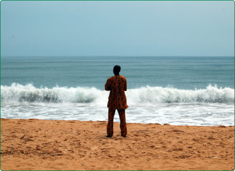
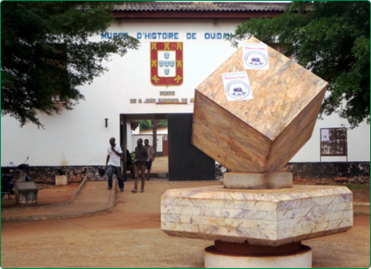
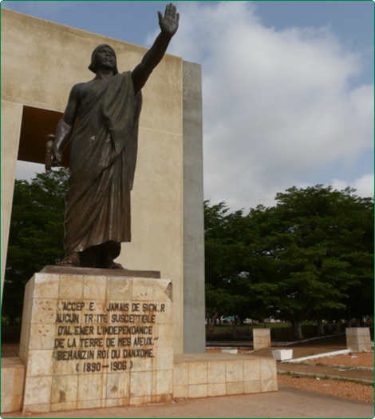
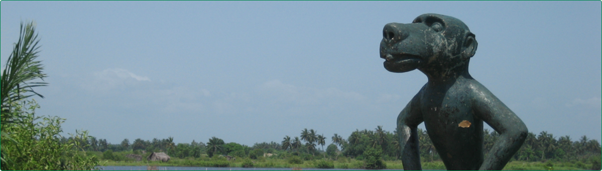
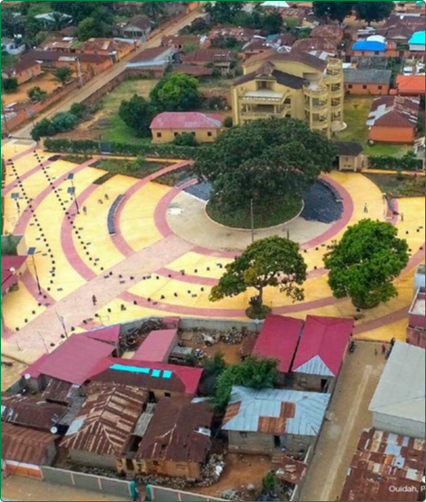

Les plus anciennes mentions faites du site de Gléhoué remontent au XVIe siècle. La tradition orale raconte que la naissance du hameau est liée à la personne du Roi Kpassé, c'est-à-dire dans une période qui va de 1550 à 1670. Les allusions écrites antérieurement au XVIe siècle de la part des traitants européens sont rares et ne portent pas directement sur le site. M. Gavoy (1955) relate que vers 1580, à proximité de la côte, les nouveaux venus (les Portugais) firent cadeau au roi et aux siens de tissus.
Choses inconnues de cette époque où l'on se servait de couvertures de raphia (Dêvo). Le roi de son côté leur donna des vivres et des chèvres. Etonnés de voir ces animaux, les Européens demandèrent d'où ils venaient ; ils apprirent ainsi que la région était habitée et qu'il y avait une ville un peu plus au nord (C. Merlo, 1940).

Etant donné les denrées offertes par le roi, il est probable que cette rencontre se soit déroulée dans une ferme d'habitation, (la ville située plus au nord serait Sahè), d'autant que les rois de Sahè avaient créé autour de leur capitale des villages de culture. L'un d'eux, Kpassè, successeur d'Aholo, aurait fondé une petite ferme qu'il appela Gléhoué (la maison des champs) au sud de Sahè. C’est cette ferme qui aurait donné plus tard son nom à la ville dont le nom local encore utilisé aujourd'hui est « Gléhoué Kpassè-Tomè ».
D’autres récits rapportent que la fondation de Gléhoué est liée à un certain Glé, d'où Gléhoué , (la maison de Glé). Enfin, pour d'autres encore, ce site aurait pu être fréquenté par des populations xwla, Guin et même Aïzo, antérieures aux Houéda. L'explication toponymique de Gléhoué en liaison avec la personne du roi Kpassè semble finalement la plus probable. Néanmoins, cette appellation pose un problème d'ordre linguistique car elle est dite en langue fongbé.
Il est étonnant qu'un site d'habitation Hxwéda puisse porter à l'origine un nom Fon. On peut se demander dans quelle mesure les appellations européennes qui désignent la localité par le nom des populations qui l'ont fondée : le Juda des Portugais, le Fida des Hollandais, le Ouidah des Français et le Whidah des Anglais, ne sont pas les plus anciennes.
Il est difficile d'avoir une représentation précise du hameau de Gléhoué . Fondé vraisemblablement au XVIe siècle, il fut d'abord composé du "tala" du roi Kpassé qui comprenait des pièces habitations (la sienne, celles de sa suite et de ses serviteurs) et des greniers. Une partie de la ferme servait sans doute aussi à parquer les esclaves destinés à la vente. Dans cet espace entouré d'une enceinte protectrice, les rois auraient pu-être reçu les premiers visiteurs Portugais en 1580 et les Capucins venus évangéliser le royaume d'Allada en 1664 et en 1699.
Aujourd'hui, ce site est probablement situé au nord-est de la ville, dans une zone dont les limites maximales seraient à l'ouest, le lieu-dit Gléhoué (à proximité de la cathédrale) et à l'est, la forêt sacrée de Kpassé. D'importants cultes sont célébrés à ces endroits pour perpétuer la mémoire du roi déifié. Il existe à Tôvé plusieurs familles de souche Houéda, comme par exemple les Adjovi, considérées comme une des plus anciennes et qui se réclament comme la descendante du fondateur de la ville.

Néanmoins, les familles de souche fon sont aujourd'hui les plus nombreuses. Le quartier Docomè aurait été fondé dans des conditions semblables à cette même époque par Kpatè, personnage dont l'histoire est liée à l'arrivée des Portugais sur cette côte. Kpatè, contrairement à ses compatriotes qui s'enfuirent, eut le courage de les conduire au pied du roi Kpassè. Son domaine aurait été le noyau de ce quartier. Le troisième quartier d'origine xwéda, Adamè, fut fondé par un successeur de Kpassè, sans doute le roi Agbangla (1670 - 1703). II est situé au sud-ouest de Tovè et ne semble pas avoir été aussi important que les deux précédents. Les traditions orales évoquent aussi le site de Gléhoué Bedji aujourd'hui appelé Agoli, à proximité duquel se trouve le temple aux pythons .
Cet emplacement, aurait été habité par un dignitaire Houéda du nom de Zossoungbo, qui aurait ensuite fondé un nouveau quartier, Sogbadji. Tous ces lieux, relativement distants les uns des autres, ne formaient pas une agglomération compacte, et n'ont pas été peuplés uniquement par des Houéda. Il est probable que des familles de pêcheurs et de piroguiers Hula et Guin s'y soient fixés à la même époque. Certains récits attestent aussi de la présence au XVIIè siècle de négociants portugais sans que l'on ne sache vraiment s'il s'agissait d'un établissement permanent ou simplement d’une installation temporaire pendant la campagne de traite. M. Gavoy (1955) parle aussi d'un certain Olivier Nicolas, un traitant français qui s'y serait installé vers 1620. Mais, il est possible qu'il y ait confusion avec un autre Olivier de Montaguère, gouverneur du fort français au XVIIIè siècle.
Le deuxième traitant européen présent à Gléhoué serait un aventurier prussien arrivé sur cette côte avec des Hollandais. Selon E. Dunglas (1958), après avoir résidé dans le comptoir de Jaquin-Offra où il possédait une loge de traites, il serait venu s'installer à Gléhoué après que la concurrence et le brigandage eussent rendu le commerce difficile en ces lieux.
Le roi du Danhomey commence à mettre en place une administration fon à Gléhoué dans les années 1740, soit presque quinze ans après la conquête. Le signe principal du nouveau pouvoir est l'installation par le roi Tégbéssou, d’un Yovogan. Ses attributions politique et économique couvraient initialement plus particulièrement les relations avec les Européens (d'où le nom Yovogan, le chef des Blancs). L'origine de son installation est aussi liée au développement de la traite. Selon C. Agbo (1959), Kakanakou le représentant du roi installé dans le village le plus proche de la mer, Zoungbodji, aurait demandé au roi d'envoyer à Gléhoué un Yovogan pour s'occuper exclusivement des relations avec les Européens afin qu'il puisse s'employer au refoulement des groupes Houéda encore résistants.

C'est aussi l'avis de M. Gavoy (1955) qui relate le représentant du roi à Ouidah, obtint qu'un second chef lui fut adjoint pour s'occuper plus spécialement des relations avec les Blancs et régler les différends qui pouvaient surgir entre eux et les indigènes.
La séparation du pouvoir entre un chef militaire et un chef en charge du commerce renvoie à la volonté d'Abomey de mieux contrôler les affaires économiques du comptoir. La réduction progressive de la résistance Houéda fait que le Yovogan devient le seul chef de Ouidah. Il prétend être le principal interlocuteur du milieu européen, des directeurs de forts en passant par les capitaines de navire jusqu'aux simples traitants libres. Les Yovogan, qui règnent sur leur monde à Ouidah (courtiers, chefs de postes, soldats, espions...), se montrent parfois irritables à l'égard des traitants blancs et des directeurs de forts qu'ils font expulser par le roi de Huélo. E. Dunglas (1957) note qu'à la suite de difficultés avec le Yovogan deux directeurs du fort français, furent expulsés de Ouidah et embarquées de force sur ordre du roi Tégbessou en 1742 et 1747.
Cependant, Yovogan reste soumis à l'autorité du roi. Celui-ci, en 1743, le punit à la suite d'une plainte du directeur du fort français. En outre, représentants directs du roi, les Yovogan sont les premiers attaqués en cas de rébellion contre l'autorité d'Abomey. D’après C. W. Newbury (1961), le premier Yovogan (qui subit ce sort) fut tué en 1744 lors de l'attaque du fort anglais. Par ordre d'importance, le second personnage de l'appareil administratif Fon est le Koussougan chargé plus particulièrement de la sécurité des hommes et des marchandises. Très redouté, il est assisté par de nombreux espions (Lèguèdè), soldats et douaniers (Dégan).
Ces troupes sont pour la plupart regroupées dans deux sites : « deux camps de soldats défendent la ville contre les incursions et assurent la police ; l'un d’eux porté un peu au nord du fort français n'a qu'un rôle de protection, mais le second établi entre deux lagons côtiers surveille toutes les allées et venues du rivage vers Gregoy et perçoit au nom du Yovogan un droit de passage » (S. Berbain, 1942). Le second camp auquel il est fait allusion est celui de Zoungbodji. A l'administration proprement dite s'ajoutent les agents commerciaux, courtiers ou émissaires spéciaux (Ahissinon) envoyés par le roi à Ouidah pour assurer ses intérêts. Enfin, le royaume d’Abomey pousse aussi l'installation de populations Fon sur les terres conquises et notamment à Ouidah.

Tout autour de la ville, sont créés de nouveaux quartiers, Fonsramè, Kaosramè, Boyasramè et autres. Le plus ancien et le plus grand est Fonsramè (quartier des Fon), qui aurait été fondé par le premier Yovogan et qui se développe au nord de la cité. Ce quartier aurait servi de résidence aux dignitaires du royaume, dont on retrouve encore la trace aujourd'hui, (interprètes royaux, conseillers du Yovogan, courtiers du roi…).
Le deuxième quartier de cette génération est Kaosramè. Son fondateur aurait été un chef de l'armée aboméenne qui mena la conquête de Ouidah. Quant au quartier Boyasramè, il fut fondé par un chef d’Abomey du nom de Boya, conseiller du Yovogan, courtier du roi. Des fon viennent aussi s'installer dans les quartiers xwéda. Ainsi, Tovè quartier xwéda accueillit des familles fon dont les responsables étaient des conseillers ou des courtiers royaux. Quant au quartier xwéda d’Ahouandjigo, il accueillit lui aussi des familles fon. En outre, certains dignitaires constituèrent dans l'ancienne cité de véritables quartiers tant leur domaine devient important. Il en est ainsi de Quenumsramè, créé par un cabécère du roi Ghézo (V. S. Quenum, 1982).
La population de Ouidah est composée après la conquête Aboméenne en majorité des familles fon (les familles xwéda ont pour la plupart fui) et s'accroît pour atteindre vers 1772 environ dix mille personnes. La traite, malgré ses fréquents revers, rapporte toujours de gros profits au roi et aux dignitaires.
Gléhoué devient le centre économique du Danhomey. Mais, l'excès de zèle et les nombreuses exactions des fonctionnaires fon limitent parfois le commerce. D. Juhe-Beaulaton (1994), observe le déclin de la traite à Gléhoué qui passe de 10.150 esclaves exportés en 1776 à 3065 en 1787 et l'attribue à l'augmentation exagérée des tribus payées au roi et des prix des esclaves que les fon fixent arbitrairement. Sous le règne d'Agonglo (1789-1797), la situation s'améliore.
E. Dunglas, (1957) note que pour ses débuts, le roi Agonglo fit une impression sur les commerçants de Ouidah principalement sur les Européens, car il supprima certaines taxes et tribus. La traite demeure un facteur d'attraction comme en témoignent l'activité du marché quotidien, Zobè, qui offre des denrées du pays et des marchandises européennes et la venue de migrants de plus en plus lointains.
Il faut noter que cette domination fon sur les xwéda et leur cité ne s’est pas seulement faite sur le seul plan politique et économique, la troupe fon aboméenne s’est imposée aussi au plan religieux et culturel.

D’où la présence des pratiques religieuse et culturelle fon dans l’actuel Ouidah. Ce qui explique la pratique de asɛn par les fon qui sont majoritaires à Ouidah mais aussi par les autres groupes socioculturels qui se réclament de souche xwéda.